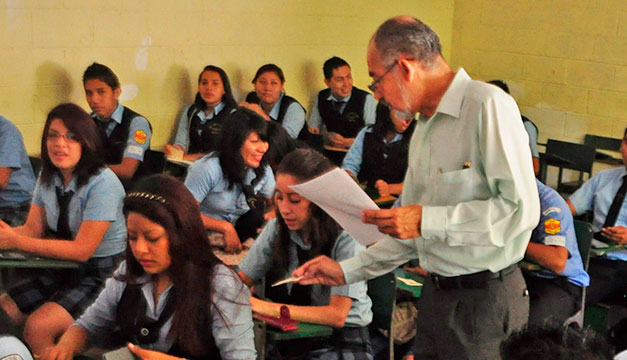

Grados que obtenemos
En nuestra institución podremos encontrar demasiados grados empezando desde kinder 4, totalmente recomendado para los chiquitines, donde ellos podran coemnzar a tanto aprender los colores, letras, números, etc.

Pero tampoco se quedan atras nuestros grandotes, para sus queridas especialidades contamos con:
Contaduria, Electronica, Software, Gatronomia.
Para los que quieren un bachillerato menos complicado y rapido para salir directo a la universidad contamos con:
bachillerato General.
